|
Pflichtaufgaben |
|
Aufgabe P1: |
| Ein
zusammengesetzter Körper besteht aus einem Zylinder
mit aufgesetztem Kegel. |
| Aus diesem
Körper wird eine Halbkugel herausgearbeitet (siehe
Achsenschnitt). |
|
|
| Berechnen Sie
das Volumen des Restkörpers. |
|
|
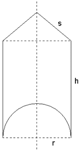 |
4 P |
|
|
Aufgabe P2: |
| Ein Quadrat
und ein Rechteck haben die Punkte B und C gemeinsam. |
|
|
| Berechnen Sie
den Umfang des Vierecks BEFC. |
|
|
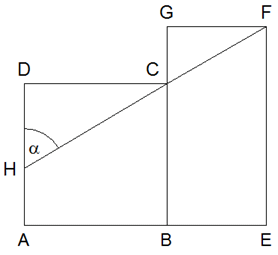 |
4,5 P |
|
|
Aufgabe P3: |
| Das Schrägbild
zeigt eine Pyramide in einem Würfel. |
|
|
| Wie groß ist
das Volumen der Pyramide? |
| Berechnen Sie
die Länge
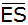 . |
|
|
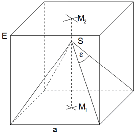 |
4,5 P |
|
|
|
|
Aufgabe P5: |
| Die nach unten
geöffnete Parabel hat die Gleichung
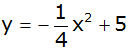 . |
|
| Zeichnen Sie die
Parabel in ein Koordinatensystem. |
|
| |
|
Die Gerade g
hat die Steigung
 und schneidet die y-Achse im Punkt
und schneidet die y-Achse im Punkt
 . . |
|
| Berechnen Sie
die Koordinaten der Schnittpunkte von p und g. |
|
|
3,5 P |
|
|
Aufgabe P6: |
| In einem Behälter befinden
sich drei blaue und drei rote Kugeln.
Viola führt zwei Zufallsexperimente
durch:
|
Experiment 1: |
Sie zieht zwei
Kugeln mit Zurücklegen |
|
Experiment 2: |
Sie zieht zwei
Kugeln ohne Zurücklegen |
| |
| Sie
vermutet: "In beiden Experimenten ist die
Wahrscheinlichkeit, zwei verschiedenfarbige Kugeln
zu ziehen, fünfzig Prozent." |
| |
|
Überprüfen Sie diese Vermutung. |
|
|
3,5 P |
|
|
Aufgabe P7: |
Die Klasse 10c wurde über die
Anzahl der im letzten Monat versandten SMS befragt.
Die Tabelle zeigt die Angaben von
12 Jungen und von 15 Mädchen: |
|
Jungen
|
5 |
0 |
39 |
21 |
77 |
14 |
46 |
25 |
128 |
24 |
35 |
66 |
|
|
|
|
Mädchen
|
37 |
29 |
67 |
36 |
10 |
47 |
34 |
177 |
56 |
116 |
28 |
51 |
80 |
0 |
132 |
|
| Um
wieviel Prozent liegt das arithmetische Mittel der
versandten SMS der 15 Mädchen über dem der 12 Jungen?
Geben Sie die Zentralwerte der beiden Datenreihen an.
Florian (20 SMS), Eva (15 SMS) und Laura (170 SMS) können
ihre Werte erst nachträglich mitteilen.
Welchen Einfluss hat dies auf
die bereits ermittelten Zentralwerte?
Begründen Sie Ihre Aussage.
|
|
3,5 P |
|
|
Aufgabe P8: |
|
|
| Die Grafik
veranschaulicht die Zuschauerentwicklung eines
Fußballvereins von der Spielzeit 03/04 bis zur
Spielzeit 08/09. |
|
| Zwischen
welchen Spielzeiten liegt die größte Steigerung vor;
wie viel Prozent beträgt sie? (Entnehmen Sie der
Zeichnung die notwendigen Werte so genau wie
möglich). |
|
Um die
Zuschauerzahl für 09/10 vorhersagen zu können, wird
die prozentuale Veränderung zwischen 07/08 und 08/09
ermittelt.
Diese prozentuale Veränderung
verwendet der Verein für die Prognose. |
| |
| Mit welcher
Zuschauerzahl kann er für 09/10 planen? |
|
|
3,5 P |
|
|
Wahlaufgaben |
|
Aufgabe W1a: |
| Im Quadrat
ABCD gilt: |
|
|
| Berechnen Sie
den Umfang des Vierecks DEFC. |
|
|
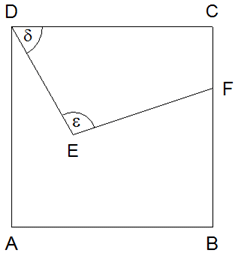 |
6 P |
|
|
Aufgabe W1b: |
| Im Dreieck ABC
liegt das gleichseitige Dreieck DBC.
Der Mittelpunkt der Strecke
 wird mit M bezeichnet.
wird mit M bezeichnet.
Weisen Sie ohne Verwendung
gerundeter Werte nach, dass gilt:
|
|
|
|
|
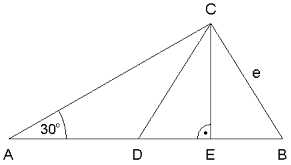 |
4 P |
|
|
Aufgabe W2a: |
Ein
zylinderförmiger Behälter hat eine kegelförmige
Vertiefung.
Er liegt waagrecht und ist zur Hälfte
mit Wasser gefüllt.
Die Maße sind:
|
|
|
| Der Behälter
wird senkrecht aufgestellt (siehe rechte Skizze).
Wie hoch steht das Wasser im
aufgestellten Behälter?
|
|
|
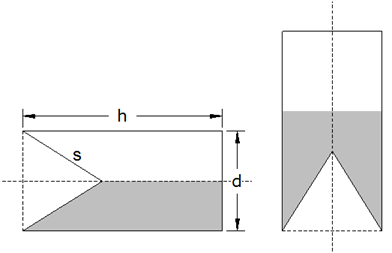 |
6 P |
|
|
Aufgabe W2b: |
|
Aus einem rechteckigen Stück Papier wird der Mantel einer
sechsseitigen Pyramide gefertigt.
Der Punkt M ist Mittelpunkt der
Seitenkante.
Bestimmen Sie die Länge der Strecke
 in der Pyramide.
in der Pyramide.
|
|
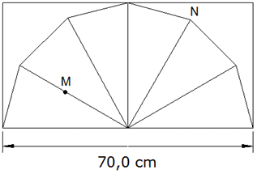 |
4 P |
|
|
Aufgabe W3a: |
| Im Schaubild
sind die Geraden 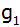
und  dargestellt.
dargestellt.
Entnehmen Sie zur Bestimmung ihrer Gleichungen
geeignete Werte.
Berechnen Sie die Koordinaten des Schnittpunktes
 von
und .
von
und .
Die Punkte
und
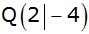
liegen auf einer nach oben geöffneten Normalparabel.
Berechnen Sie die Koordinaten
des Scheitelpunktes der Parabel.
|
|
|
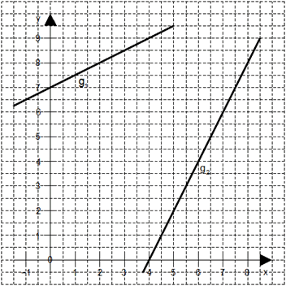 |
6 P |
|
|
Aufgabe W3b: |
|
Gegeben sind die beiden Parabeln:
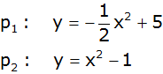
Die beiden Parabeln schneiden sich in den Punkten
 und
und
 . .
Die Punkte
und
bilden zusammen mit den Scheitelpunkten
 und
und
 das Viereck
das Viereck
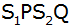 .
Berechnen Sie seinen Flächeninhalt.
Begründen Sie, weshalb das Viereck
ein Drachenviereck ist.
|
|
4 P |
|
|
Aufgabe W4a: |
|
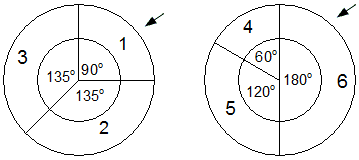 |
|
Die beiden Glücksräder werden gedreht.
Die Ergebnisse
beider Glücksräder werden addiert.
Es werden zwei Gewinnsituationen angeboten:
|
|
Gewinnsituation A: "Summe 8 oder 9" |
Gewinnsituation B: "alle anderen Summen" |
|
Für welche würden Sie sich entscheiden?
Anschließend wird das rechte Glücksrad so verändert, dass
die Sektoren der Zahlen 4 und 5
jeweils den
Mittelpunktswinkel 90° erhalten.
Für welche Gewinnsituation würden Sie
sich jetzt entscheiden?
|
|
6 P |
|
|
Aufgabe W4b: |
| Ein quadratisches Blatt Papier
(Format 10,0 cm x 10,0 cm) wird entlang von
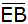
gefaltet. Die Strecke
 hat eine Länge von 4,0 cm.
hat eine Länge von 4,0 cm.
Berechnen Sie die Länge
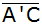
nach der Faltung.
|
|
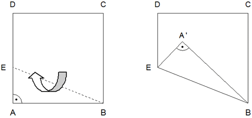 |
|
4 P |
|